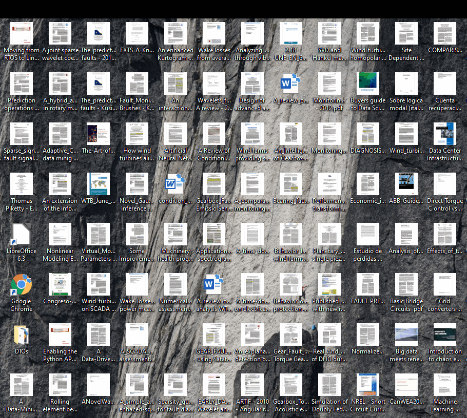

The Desktop Organizer application was initially developed to overcome the drawbacks of the direct link concept in the Windows Desktop, and has evolved by incorporating the following functionalities that facilitate daily work:
- To facilitate the access to documents through significant names.
- To facilitate access to applications with particular parameters through significant names.
- To group files and applications with functional criteria, regardless of their physical location.
- To keep notes on documents and applications.
- To facilitate access to documents through tags (taxonomies) and free text searches.
The direct link concept on the Windows Desktop
The functionality of direct links, also known as shortcuts, on the Windows Desktop is to offer a fast and convenient mechanism for accessing files and applications, regardless of where they are located in the file system. The following figure shows a typical Desktop.

Each direct link includes an icon and a text, and they are usually very intuitive to remind us which document or application they refer to. However, they have two important drawbacks:
- when there are many, they do not facilitate the search for a particular document, since, in many cases, the icon corresponds to the application associated with that document, and therefore the icon is common to many of them (eg Word, PDF, Excel, ... files).
and - often, the associated text is too short and therefore does not help to discern which document is associated.
Related Topics:
To group documents and applications with functional criteria
Access to documents through tags
Tag Tree View
Groups: create, edit, delete
Creating options
Drag & drop a file
"Add Option" menu
Editing "Comments"
Editing "Tags" in Options
Combined editor for Groups and Options
Groups: create, edit, delete
Options: create, edit, delete
To group documents and applications with functional criteria
Access to documents through tags
Tag Tree View
Groups: create, edit, delete
Creating options
Drag & drop a file
"Add Option" menu
Editing "Comments"
Editing "Tags" in Options
Combined editor for Groups and Options
Groups: create, edit, delete
Options: create, edit, delete